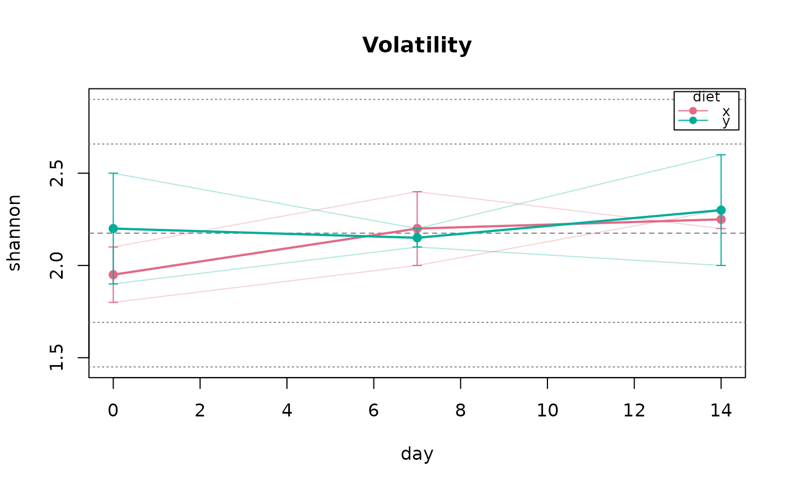

The numbers behind q2-longitudinal's volatility chart (a control chart of
a variable over time), and the chart itself with plot(): each group's
mean at each state with a bootstrap confidence interval, global control
limits (the mean \(\pm\) 2 and 3 standard deviations over all the
samples), and each subject's trajectory.
Usage
volatility(
x,
subjects,
states,
groups = NULL,
data = NULL,
conf_level = 0.95,
n_resamples = 1000L,
seed = 0L
)Arguments
- x
The variable: a numeric vector with one value per sample (such as an
alpha_div()result), or the name of a numeric column ofdata.NAs are left out of the means and limits. For the features of a count table, callvolatility()for each.- subjects
Optional: the subject of each sample, for the trajectories (q2's
individual_id_column), given asxis. NoNAs.NULLfor none.- states
The time point of each sample, as a number (days, weeks, or visit numbers): given as
subjectsis (q2'sstate_column). At least two distinct values; noNAs.- groups
Optional: the group of each sample (q2's
default_group_column), given asxis: a mean line per group. NoNAs. Default:NULL, one group of every sample.- data
Optional sample metadata: a data frame with one row per sample, holding the columns named in
x,subjects,statesandgroups. Whenxnames one of its columns, its rows are the samples; otherwise they are matched to the names ofxby row name, or else taken in order. Default:NULL.- conf_level
The confidence level of the intervals: a number strictly between 0 and 1. Default:
0.95, as q2's chart.- n_resamples
The number of bootstrap resamples for each interval. Default:
1000, as q2's chart.- seed
An integer seed for the bootstrap resamples. Default:
0.
Value
A list of class ecodive_volatility:
meansA data frame, one row per group and state (in the groups' order, then by state):
group,state,mean(of the values that are notNA),lowerandupper(the bootstrap interval of the mean) andn(the number of values).globalA named numeric vector over all the samples' values:
mean,sd(the sample standard deviation, with \(n - 1\); 0 for a single value, as Vega's),lower_3sd,lower_2sd,upper_2sdandupper_3sd(the mean \(\pm\) 2 and 3 SDs).trajectoriesWith
subjects, a data frame of each sample (sample,subject,group,state,value), ordered by subject and state; elseNULL.
Attributes conf_level and n_resamples describe the intervals.
Details
The interval is Vega's ci0 and ci1 aggregates, which q2's chart
draws (Vega's bootstrapCI()): n_resamples times, the mean of as many
values as the group has, drawn from them with replacement; then the
\(\alpha/2\) and \(1 - \alpha/2\) quantiles of those means (R's
default stats::quantile() type 7), with \(\alpha = 1 -\)
conf_level. Vega draws with JavaScript's unseeded Math.random(), so
its intervals change each time the chart is drawn; ecodive's come from
its own seeded generator (PCG, one stream per group and state), so the
same seed gives the same intervals, which differ from Vega's as one
draw does from another. A group of one value has the interval of width 0.
Differences from q2-longitudinal: its chart lets the viewer pick the
variable and the grouping interactively; here, one of each per call.
Its tooltips count every sample of a group at a state (Vega's count),
those with a missing value too; n counts the values used.
Same names in other packages: TTR::volatility() (of financial
prices) is unrelated; whichever package was attached last masks the
other's, so write ecodive::volatility() to be sure.
References
Bokulich, N. A., Dillon, M. R., Zhang, Y., Rideout, J. R., Bolyen, E., Li, H., Albert, P. S., & Caporaso, J. G. (2018). q2-longitudinal: longitudinal and paired-sample analyses of microbiome data. mSystems, 3, e00219-18. doi:10.1128/mSystems.00219-18
Efron, B., & Tibshirani, R. J. (1993). An Introduction to the Bootstrap. Chapman & Hall.
Satyanarayan, A., Russell, R., Hoffswell, J., & Heer, J. (2016). Reactive Vega: a streaming dataflow architecture for declarative interactive visualization. IEEE Transactions on Visualization and Computer Graphics, 22, 659–668. doi:10.1109/TVCG.2015.2467091
See also
Other longitudinal:
first_differences(),
first_distances(),
nmit()
Examples
meta <- data.frame(
subject = rep(c('a', 'b', 'c', 'd'), each = 3),
day = rep(c(0, 7, 14), 4),
diet = rep(c('x', 'y'), each = 6),
shannon = c(2.1, 2.4, 2.2, 1.8, 2.0, 2.3, 2.5, 2.2, 2.6, 1.9, 2.1, 2.0) )
v <- volatility('shannon', 'subject', 'day', 'diet', data = meta)
v
#> Volatility
#> Global mean 2.18, SD 0.242; limits 1.69 to 2.66 (2 SD), 1.45 to 2.9 (3 SD)
#> Means with 95% bootstrap intervals (1000 resamples):
#> # A data.frame: 6 × 6
#> group state mean lower upper n
#> <fct> <dbl> <dbl> <dbl> <dbl> <int>
#> 1 x 0 1.95 1.8 2.1 2
#> 2 x 7 2.2 2 2.4 2
#> 3 x 14 2.25 2.2 2.3 2
#> 4 y 0 2.2 1.9 2.5 2
#> 5 y 7 2.15 2.1 2.2 2
#> 6 y 14 2.3 2 2.6 2
#> Trajectories of 4 subjects ($trajectories)
plot(v)
